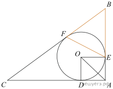

а) Пусть $O$ — центр вписанной окружности треугольника $ABC$.
Центр окружности, вписанной в угол, лежит на его биссектрисе, значит, $AO$ — биссектриса угла $BAC$. Треугольник $AOD$ прямоугольный, так как радиус, проведённый в точку касания, перпендикулярен касательной. Кроме того, $AD=R$ и $OD=R$, поэтому треугольник $AOD$ равнобедренный прямоугольный. Следовательно, $\angle OAD=45^\circ$. Так как $AO$ — биссектриса угла $BAC$, получаем $\angle BAC=90^\circ$. Значит, треугольник $ABC$ прямоугольный, что и требовалось доказать.
б) Обозначим $BF=x$. По теореме о равенстве отрезков касательных, проведённых к окружности из одной точки,
$AE=AD=5,\quad CF=CD=15,\quad BE=BF=x$.
Тогда $AC=AD+CD=20$, $AB=AE+BE=5+x$, $BC=CF+BF=15+x$. Так как в пункте а) доказано, что треугольник $ABC$ прямоугольный, по теореме Пифагора
$$BC^2=AC^2+AB^2,$$
то есть
$$(15+x)^2=20^2+(5+x)^2.$$
Из этого уравнения находим:
$$225+30x+x^2=400+25+10x+x^2,$$
$$20x=200,$$
$$x=10.$$
Следовательно, $BE=BF=10$ и $BC=15+10=25$. Так как треугольник $ABC$ прямоугольный,
$$\sin\angle ABC=\frac{AC}{BC}=\frac{20}{25}=\frac45.$$
Теперь найдём площадь треугольника $BEF$:
$$S_{BEF}=\frac12\,BE\cdot BF\cdot\sin\angle ABC=\frac12\cdot10\cdot10\cdot\frac45=40.$$
Ответ: $40$.